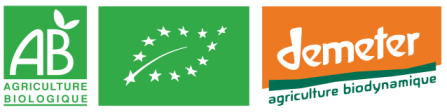

Découvrir le bio
Introduction
Bienvenue sur notre page dédiée à la découverte du bio ! Chez BioLife, nous croyons en l'importance de choisir des produits qui bénéficient à la fois de notre santé et de l'environnement. Découvrez pourquoi le bio est plus qu'une tendance, c'est un mode de vie.
Qu'est-ce que le Bio ?
Le bio, abréviation de biologique, se réfère à une méthode d'agriculture qui met l'accent sur des pratiques respectueuses de l'environnement et de la santé humaine. Nos produits biologiques sont cultivés sans l'utilisation de pesticides chimiques et suivent des normes strictes de production.
Les Bienfaits pour la Santé
- Moins de Pesticides : La consommation de produits biologiques réduit l'exposition aux résidus de pesticides, favorisant ainsi une alimentation plus saine.
- Nutriments Supérieurs : Des études suggèrent que certains produits biologiques peuvent avoir une teneur nutritionnelle plus élevée.
Pratiques Agricoles Durables
L'agriculture biologique favorise des pratiques respectueuses de l'environnement, telles que la rotation des cultures, la préservation des sols et la promotion de la biodiversité. Choisir le bio, c'est soutenir des méthodes agricoles qui préservent notre planète.
Labels et Certifications
Écoutez ce que nos clients ont à dire sur leur expérience avec nos produits biologiques. Leurs histoires vous donneront un aperçu des avantages du bio au quotidien.
Témoignages
Explorez nos articles, études et autres ressources pour approfondir vos connaissances sur le bio.